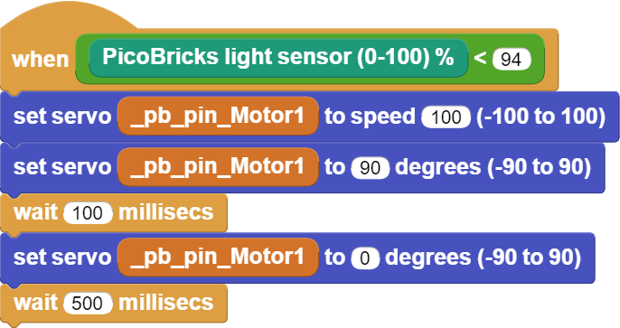

Dinosaur Game¶
Introduction¶
In this project you will learn how to control Servo motors with PicoBricks. While writing the project codes, we will first fix the LDR sensor on the computer screen and read the sensor data on the white and black background, then write the necessary codes for the servo motor to move according to these data.
Project Details and Algorithm¶
If the electronic systems to be developed will fulfill their duties by pushing, pulling, turning, lifting, lowering, etc., pneumatic systems or electric motor systems are used as actuators in the project. Picobricks supports two different engine types so that you can produce systems that can activate the codes you write in your projects. DC motor and Servo motors in which the movements of DC motors are regulated electronically. Servo motors are motors that rotate to that angle when the rotation angle value is given. In RC boats, servo motors are used with the same logic to change the direction of the vehicle. In addition, advanced servo motors known as smart continuous servos, which can rotate full-round, are also used in the wheels of the smart vacuum cleaners we use in our homes.
In this project, we will automatically play Google Chrome offline dinasour game to picobricks. In the game, Picobricks will automatically control the dinosaur’s movements by detecting obstacles. We will use the picobricks LDR sensor to detect the obstacles in front of the dinosaur during the game. LDR can send analog signals by measuring the amount of light touching the sensor surface. By fixing the sensor on the computer screen, we can detect if there is an obstacle in front of the dinosaur by taking advantage of the difference in the amount of light between the white and black colors. When an obstacle is detected, we can use a servo motor to automatically press the spacebar on the keyboard. In this way, the dinosaur will easily overcome the obstacles. While writing the project codes, we will firstly fix the LDR sensor on the computer screen and read the sensor data on the white and black background, then write the necessary codes for the servo motor to move according to these data.
Wiring Diagram¶

You can program and run Picobricks modules without any wiring. If you are going to use the modules by separating them from the board, then you should make the module connections with the Grove cables provided.
MicroPython Code of the Project¶
from machine import Pin, ADC, PWM#to access the hardware on the pico
from utime import sleep #time library
ldr=ADC(27) #initialize digital pin 27 for LDR
servo=PWM(Pin(21)) #initialize digital PWM pin 27 for Servo Motor
servo.freq(50)
while True:
sleep(0.01)
#When LDR data higher than 40000
if ldr.read_u16()>4000:
servo.duty_u16(2000)# sets position to 180 degrees
sleep(0.1)#delay
servo.duty_u16(1350) # sets position to 0 degrees
sleep(0.5)#delay
Truco
Ifyou rename your code file to main.py, your code will run after every boot.
Arduino C Code of the Project¶
#include <Servo.h>
Servo myservo;
void setup() {
// put your setup code here, to run once:
myservo.attach(22);
myservo.write(20);
pinMode(27,INPUT);
}
void loop() {
// put your main code here, to run repeatedly:
int light_sensor=analogRead(27);
if(light_sensor>100){
int x=45;
int y=20;
myservo.write(x);
delay(100);
myservo.write(y);
delay(500);
}
}
Coding the Project with MicroBlocks¶
 |
Nota
To code with MicroBlocks, simply drag and drop the image above to the MicroBlocks Run tab.